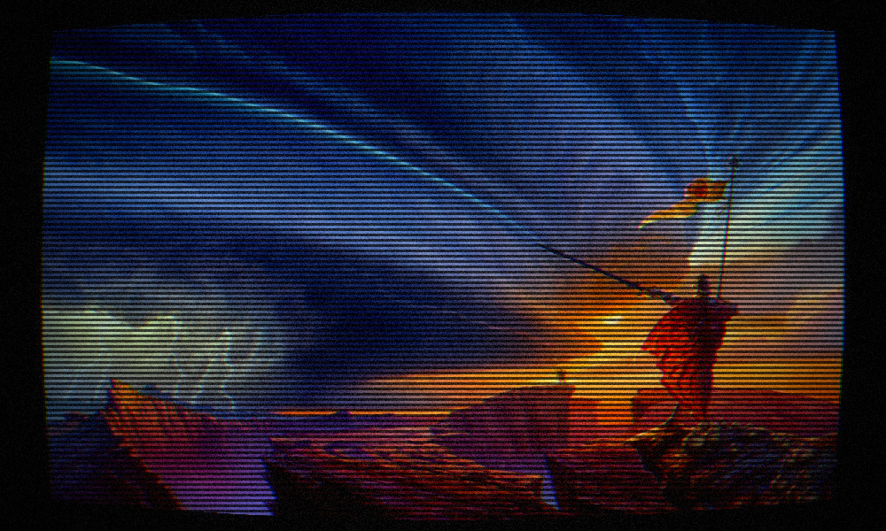

the_way_of_Kings
[brandon_sanderson]
The Way Kings is the first book in the Stormlight series. It is a fantasy novel that coveres many themes through each perspective in the story. The main protaganists are Kalading, Shallan, and Dalinar. There is war, struggle, mystery, and so many thing si have never seen before done in a book. The world building and character growth is what compells me to read on, and the prose is a perfect level for such a complex story.